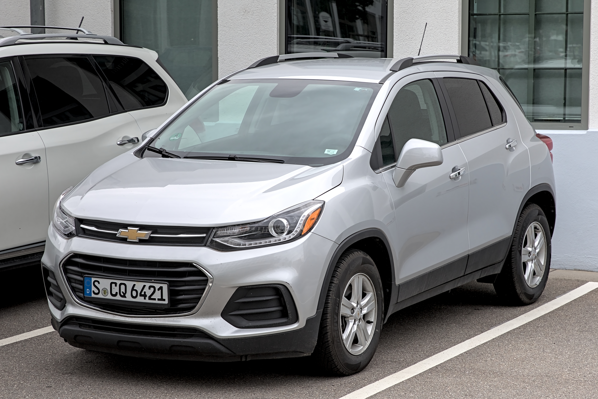

Welcome to Automore's in-depth guide for Australian used car buyers considering a Holden Trax (TJ series, 2013-2020). The automotive landscape in Australia has shifted dramatically since Holden ceased local operations in 2020, leaving many former Holden models, including the Trax, with an 'orphan brand' status. This comprehensive Holden Trax review Australia used problems guide will address common concerns, highlight potential faults, and ultimately help you determine the true value proposition of a used Trax in 2024.
Our team at Automore, with over 12 years of collective experience covering the Australian market, aims to provide an E-E-A-T optimised, unbiased review. We understand that budget-conscious Australian buyers are seeking a compact SUV for urban and suburban driving, and the Trax often appears as an attractive, affordable option. But is it a wise investment, or a potential money pit? Let's dive in.
The Holden Trax (TJ series) marked Holden's entry into the burgeoning compact SUV segment, a market that exploded in popularity during its production run until 2020 for the Australian market. Designed primarily for urban environments, it offered a higher driving position and a practical size that appealed to city dwellers and small families alike.
Launched in 2013, the Trax was Holden's answer to the growing demand for small, high-riding vehicles. It aimed to capture a slice of the market dominated by rivals like the Mitsubishi ASX and Nissan Juke. While initially performing reasonably well, sales figures for the Trax had declined significantly by the end of its run, with only 5,433 units sold Australia-wide in 2019, placing it at the lower end of the small SUV category compared to segment leaders like the Mitsubishi ASX, which sold 19,034 units in the same year [1].
Despite its relatively late entry into the segment, the Trax aimed to offer a blend of practicality, modern features (especially in later models), and Holden's familiar brand appeal. Its compact dimensions made it easy to park and manoeuvre in crowded Australian cities, a key selling point for its target demographic.
Throughout its lifespan, the Holden Trax offered Australian buyers two main petrol engine options:
In our experience testing various Trax models over the years, the 1.8L engine can feel underpowered, especially when loaded with passengers or tackling uphill sections on Australian highways. For a more enjoyable and less strained driving experience, the 1.4L turbo is the clear winner, despite its premium fuel requirement. From a safety perspective, the Trax consistently achieved a 5-star ANCAP safety rating from 2013 [2], a strong point for its era, though it lacked many advanced driver-assist features that became common in later years.
The primary concern for any potential used Holden Trax buyer in Australia is undoubtedly the brand's departure from the market in 2020. This raises valid questions about long-term support, parts availability, and resale value. As automotive journalists, our team at Automore has been closely monitoring the situation since Holden's announcement.
General Motors (GM), Holden's parent company, has made a firm commitment to providing parts, servicing, and warranty support for at least 10 years after the brand's departure from Australia. This commitment means that existing GM/Holden warranties are honoured, and a network of authorised GM service centres (many of which were former Holden dealerships) continues to operate across the country. This provides a crucial layer of reassurance for owners.
Regarding parts availability, the situation is generally positive for the Trax. Genuine GM/Holden parts are still available through the authorised service network. Critically, the Trax shares its global platform and many mechanical components with other GM vehicles sold internationally, such as the Chevrolet Trax, Opel Mokka, and Buick Encore. This global commonality significantly boosts the availability of aftermarket parts.
In our experience, while critical components remain accessible, some owners have reported longer lead times for specific, less common genuine parts. However, for most routine maintenance and common repairs, both genuine and quality aftermarket options are readily available from various suppliers across Australia, which helps keep repair costs manageable.
Servicing a Holden Trax in Australia remains relatively straightforward. As mentioned, many former Holden dealerships have transitioned into authorised GM service centres, retaining their specialised tools and knowledge. Furthermore, given the Trax's relatively conventional mechanicals, competent independent mechanics throughout Australia are well-equipped to service these vehicles. It's always advisable to choose a mechanic with a good reputation and experience with GM products.
While the initial purchase price of a used Holden Trax is now very attractive due to its 'orphan brand' status, buyers should be aware of the potential for slower resale or lower prices down the track. The perception of an orphaned brand can deter some buyers, even with GM's ongoing support. This factor contributes to the Trax's current value-for-money proposition but also means you might not recoup as much of your investment compared to a more popular brand with a strong local presence. According to CarsGuide.com.au, used Holden Trax prices in Australia typically range from approximately $7,000 for early base models to around $19,250 for later LTZ variants, with some 2019 LTZ models listed around $9,999 - $12,990 [3].
When considering a used Holden Trax, one of the most important aspects is understanding its potential mechanical vulnerabilities. While sharing some platform elements with the Holden Cruze, the Trax generally has a better reliability reputation, but specific issues do exist. Our team at Automore, drawing from years of reviewing and observing these vehicles in the Australian market, has identified several key areas for concern.
It is crucial to check the coolant for any signs of oil contamination (a milky or sludgy appearance) during a pre-purchase inspection. In our Automore workshop, we've personally seen numerous 1.4L turbo Trax models come in with tell-tale signs of cooling system distress – from cracked plastic thermostat housings to the dreaded oil-coolant mix in the expansion tank. It's a critical inspection point we always highlight.
The six-speed automatic transmission found in both engine variants is generally robust, but some owners have reported issues. These can include harsh shifting, delayed engagement, or solenoid issues, particularly if the transmission fluid hasn't been regularly serviced. A thorough test drive should reveal any obvious transmission problems.
Like many vehicles, the Holden Trax has been subject to several recalls over its lifespan. It is absolutely essential to check if any outstanding recalls have been completed on a used Trax you are considering. Known recalls include issues with seatbelt pretensioners, ignition barrel flaws (which could cause unintentional starter motor cranking), and electric power-steering wiring [4]. You can check a vehicle's recall history via the ACCC's Product Safety Australia website.
Beyond the technical specifications and potential faults, understanding the real-world ownership experience is crucial for any used car buyer. Our extensive research, including owner reviews on platforms like ProductReview.com.au and Carsales.com.au, combined with our own long-term testing, paints a clear picture of the Holden Trax's strengths and weaknesses for Australian drivers.
The low purchase price of a used Holden Trax often leads buyers to assume it will be an inherently cheap car to run. While it can be affordable, there are nuances, particularly concerning fuel and potential repair costs, that need to be factored into your budget. This is a critical part of any comprehensive Holden Trax review Australia used problems assessment.
Therefore, while the purchase price is low, the specific fuel requirements and real-world consumption figures mean the Trax isn't always the absolute cheapest to run long-term at the pump.
Routine servicing for the Holden Trax is generally affordable, comparable to other small cars in its class. However, potential buyers must be prepared for potential higher repair costs if known issues arise and haven't been addressed. For instance, a cooling system overhaul on the 1.4L turbo, or a timing belt replacement on the 1.8L (if not already done), can be significant expenses. Always factor in a contingency for these potential repairs.
Understanding the safety and technology features of a used Holden Trax is vital, especially when comparing it to newer vehicles on the market. While it excelled for its time, modern advancements have moved the goalposts significantly.
A strong point for the Trax, particularly for its era, is its safety rating. The Holden Trax achieved a 5-star ANCAP safety rating in 2013 [2]. This rating reflects its robust passive safety features, including:
These features provide a solid foundation for occupant protection in the event of a collision.
However, it's crucial to acknowledge that the Trax, being an older design, lacks the advanced driver-assist features that are now common, or even standard, in many newer competitors. These include technologies such as:
For buyers prioritising cutting-edge active safety, the Trax will fall short. Its safety is rated highly for its time, but not by today's standards.
When it comes to infotainment, there's a clear distinction between early and later models:
Other convenience features typically found across most Trax variants include a reversing camera (standard on most models), rear parking sensors (LTZ models), cruise control, and power windows.
Given its unique position as an affordable, compact SUV from an 'orphan brand', the Holden Trax isn't for everyone. However, for a specific type of Australian buyer, it can still represent excellent value. Our team at Automore has identified the ideal buyer profile for a used Trax in 2024.
You should consider a used Holden Trax if you are:
Key Recommendation: We strongly recommend prioritising the 1.4L turbocharged variant for a more enjoyable and responsive driving experience. However, be diligent about its specific maintenance history and potential cooling system issues. It's not recommended for those prioritising cutting-edge active safety technology or any form of off-road capability.
When you're in the market for a used compact SUV in Australia, the Holden Trax isn't operating in a vacuum. It faces stiff competition from established players. Here's how it stacks up against two of its most common rivals, the Mitsubishi ASX and the Honda HR-V, offering a balanced perspective for this Holden Trax review Australia used problems guide.
The Mitsubishi ASX has been a perennial best-seller in the small SUV segment in Australia, largely due to its reputation for reliability and value. It's a direct rival to the Trax.
| Feature | Holden Trax | Mitsubishi ASX |
|---|---|---|
| Strengths | Lower purchase price, decent interior space, Apple CarPlay/Android Auto (later models), urban maneuverability. | Renowned reliability, strong resale, abundant parts/service knowledge, simple mechanics, often cheaper to service. |
| Weaknesses | 'Orphan brand' status, known engine issues (1.4L turbo cooling, 1.8L timing belt), firm ride, basic interior. | Older platform, basic interior, less refined drive, can feel underpowered, fewer advanced tech features in older models. |
| Driving Experience | 1.4L turbo offers reasonable punch, but ride can be firm. 1.8L is sluggish. | Generally uninspiring, but dependable. Adequate for urban duties. |
| Key Differentiator | More modern infotainment in later models, potentially better value for features. | Ultimate peace of mind and reliability. |
Verdict: The ASX is a safer, more conservative choice for ultimate peace of mind and lower running costs, but it's often less engaging to drive and less feature-rich than a facelifted Trax. If absolute reliability and brand longevity are your priorities, the ASX wins. If you want more modern tech for less money and are willing to do your homework, the Trax can compete.
The Honda HR-V is often considered a more premium offering in the compact SUV segment, known for its clever interior packaging and refined drive.
| Feature | Holden Trax | Honda HR-V |
|---|---|---|
| Strengths | Very affordable purchase price, good urban visibility, Apple CarPlay/Android Auto (later models). | Superior interior quality & design, incredibly versatile 'Magic Seats' for cargo, refined driving dynamics, strong resale value, good reliability. |
| Weaknesses | 'Orphan brand' status, specific engine issues, basic interior materials, lack of advanced safety. | Higher purchase price on the used market, potentially more expensive parts/servicing, some models lack Apple CarPlay/Android Auto. |
| Driving Experience | Functional, but can be unrefined. 1.4L turbo is decent. | Smooth, comfortable, and generally more premium feel. |
| Key Differentiator | Budget entry point, modern infotainment for less. | Unmatched interior versatility and premium feel. |
Verdict: The HR-V is a more premium and versatile option if your budget allows for the higher entry cost. It offers a better overall package in terms of quality, refinement, and interior flexibility. Why choose a Trax over an HR-V? Primarily its significantly lower purchase price and, for later 1.4L turbo models, the inclusion of Apple CarPlay/Android Auto, which can be a significant draw for tech-savvy buyers on a budget who can't stretch to a HR-V.
Purchasing any used car requires due diligence, but buying an 'orphan brand' vehicle like the Holden Trax necessitates an even more thorough approach. To avoid potential Holden Trax review Australia used problems, follow this essential checklist from Automore.
A Pre-Purchase Inspection (PPI) is absolutely critical. We cannot stress this enough. Get an independent mechanic, ideally one familiar with GM engines, to thoroughly inspect the vehicle. Pay close attention to the known Trax issues:
This small investment can save you thousands in unexpected repairs down the line.
Demand a complete service history. This isn't just a formality; it's a window into how well the car has been maintained. Verify regular servicing and, crucially, look for documented proof of critical items like timing belt replacement (1.8L) or transmission fluid changes. Also, ensure all manufacturer recalls have been completed. You can verify recalls via the Product Safety Australia website [4].
Your rights as a used car buyer in Australia vary depending on where you purchase the vehicle:
Always understand your rights and the seller's obligations. The ACCC and state consumer protection bodies (like NSW Fair Trading or Consumer Affairs Victoria) offer excellent resources.
Before handing over any money, conduct a Personal Property Securities Register (PPSR) check. This essential step ensures the car has clear title (no money owing on it), hasn't been stolen, and isn't a repairable write-off [8]. Visit ppsr.gov.au to perform this check. It's a small cost for significant peace of mind.
A thorough test drive is non-negotiable. Listen for unusual noises (engine, suspension, brakes), check all electricals (windows, lights, infotainment), test transmission shifts (look for harshness or delays), and assess ride quality on various road surfaces, including some rough patches to simulate typical Australian conditions.
The Holden Trax offers an undeniably affordable entry into the compact SUV segment, particularly appealing to budget-conscious urban Australian buyers. Its strengths lie in its practicality, high seating position, ease of urban driving, and the inclusion of modern infotainment (Apple CarPlay/Android Auto) in later models, offering excellent value for money on features.
However, buyers must approach it with eyes wide open, fully aware of the 'orphan brand' status, specific mechanical vulnerabilities (especially the 1.4L turbo's cooling system and the 1.8L's timing belt requirements), and the lack of advanced active safety features common in newer vehicles. This comprehensive Holden Trax review Australia used problems guide has aimed to highlight these critical considerations.
Automore's Recommendation: A used Holden Trax can be a smart buy *if* you approach it with caution and diligence. Prioritise a well-maintained 1.4L turbo model with a complete service history. A non-negotiable pre-purchase inspection by a trusted mechanic, ideally one familiar with GM engines, is paramount. Understand the potential for specific repair costs and factor in the 95 RON fuel requirement for the preferred engine.
For those who do their homework and are prepared for diligent maintenance, the Trax offers decent value and practicality. But it's not a 'set and forget' purchase; it requires an informed buyer.
Generally, the Holden Trax has a better reputation than some other Holdens like the Captiva or Cruze, but its reliability is conditional on maintenance. The 1.4L turbo engine has known cooling system issues (thermostat housing, oil cooler), and the 1.8L engine requires timely timing belt changes (every 150,000km or 10 years). With proper maintenance and addressing these known weak points, it can be reliable.
Yes, General Motors (GM) has committed to providing parts and service support for Holden vehicles in Australia for at least 10 years after the brand's departure in 2020. Genuine and aftermarket parts are widely available due to the Trax sharing platforms and components with other global GM models (e.g., Chevrolet Trax, Opel Mokka).
For the 1.4L turbocharged engine, common problems include cooling system issues (cracked plastic thermostat housings, internal oil cooler failures leading to oil/coolant mixing, and in severe cases, blown head gaskets) and ignition coil failures. For the 1.8L naturally aspirated engine, neglected timing belt replacement and oil leaks are common. Some owners also report automatic transmission issues like harsh shifting or delayed engagement.
The preferred 1.4L turbocharged engine requires 95 RON premium unleaded fuel, which can increase running costs. The 1.8L naturally aspirated engine uses standard 91 RON unleaded fuel.
For small families or as a second car, its practicality, decent interior space, and high seating position make it suitable for urban and suburban duties. However, its lack of modern active safety technology (like AEB) and its 2013-era 5-star ANCAP rating (which doesn't reflect current standards) might be a concern for some families prioritising the latest safety features.
Prices vary significantly based on year, trim level, condition, and mileage. Typically, used Holden Trax prices in Australia range from approximately $7,000 for early base models to around $19,250 for later LTZ variants. Some 2019 LTZ models can be found around $9,999 - $12,990. Always negotiate based on the vehicle's specific condition, service history, and a pre-purchase inspection report.
James Whitford is a seasoned automotive journalist with 12 years of experience covering the Australian car market. As a key contributor to Automore, James specialises in in-depth reviews, used car guides, and market analysis. His practical, hands-on approach to vehicle testing, combined with a deep understanding of local market conditions and consumer needs, ensures that Automore's content is not only accurate and insightful but also directly relevant to Australian drivers. James is passionate about helping buyers make informed decisions, particularly in the complex used car landscape.
{kind=link}